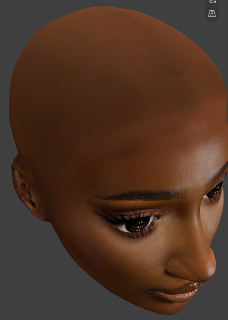

Repair Or Reset A Head¶
Applies to: Parting Placer V2.0.0 · Blender 4.4 · 5.2
Fix a head whose partings have come adrift, or clear it and start again.
You Need First
- Panel Header shows where the gear menu is.
Repair After An Update Or A Problem¶
Run Repair once in each file after you update the add-on, or when something looks wrong.
- Check any appearance slider you pushed far on purpose. Repair brings sliders back inside their limits.
- Select the gear at the right end of the panel title.
- Select Repair Partings.
Clear Every Parting And Keep Your Material¶
- Select the trash can under the side buttons of the parting list.
- Confirm.
The partings go, but the material you tuned stays. The next parting you place picks up your settings.
Start Again From The Plain Skin Material¶
- Select the gear at the right end of the panel title.
- Select Reset Partings.
Every parting goes, and the head's material goes back to how it was before you started.

No Second Chance To Cancel
Reset runs as soon as you select it. It does not ask first. If you didn't mean it, press Ctrl+Z straight away to get your partings back.
If You're Stuck
- A parting looks doubled? See A Parting Looks Doubled Or Folded.
- The face shows in your normal map? See The Face Shows Through My Baked Normal Map.
Recommended next: Troubleshooting